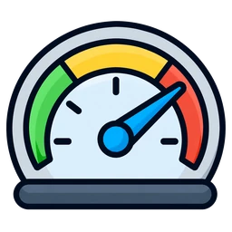
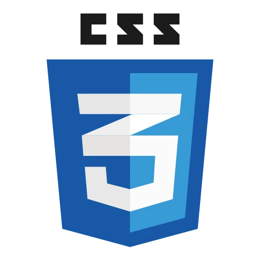
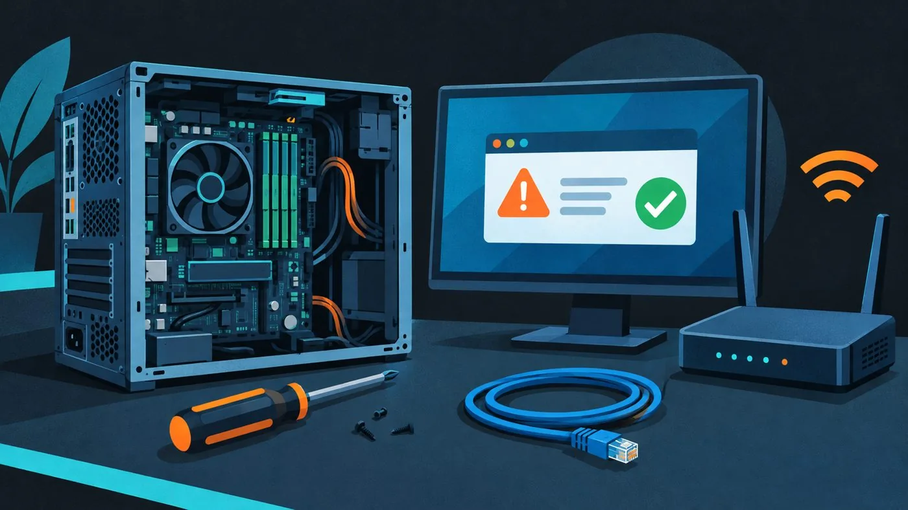
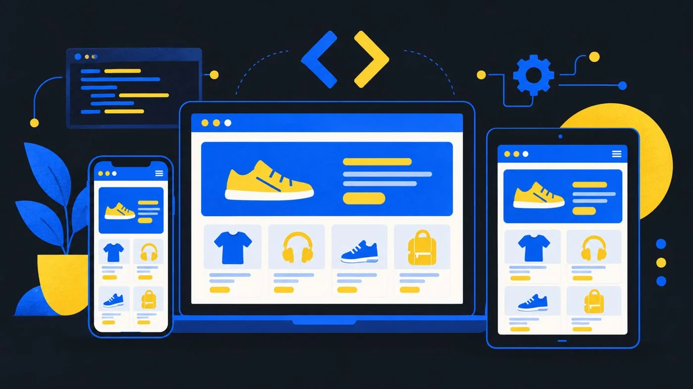

Hi, I’m
Zeyad
I’m a IT Technician
I’m an IT technician from Egypt with a diploma in Computer Science, currently pursuing a bachelor’s degree in Business Information Systems. I do hands-on Windows installation, driver setup, diagnostics and troubleshooting, and I build my own tools for the job: a step-by-step troubleshooting guide, a help desk ticket tracker and an employee ticket portal. I explain fixes in plain language and keep learning.
Skills
Technical
 IT Technician
IT Technician Windows Troubleshooting
Windows Troubleshooting- IT Support Fundamentals

System Diagnostics Hardware Maintenance
Hardware Maintenance Basic Networking
Basic Networking- Cybersecurity Fundamentals
- Documentation
 MS Office
MS Office- SQL (Basic)
- HTML

CSS JavaScript
JavaScript- Java (Fundamentals)
Professional
- Problem Solving
 Communication
Communication- Active Listening
 Adaptability
Adaptability Time Management
Time Management- Team Collaboration
- Remote Work
 Arabic: Native
Arabic: Native English: Upper Intermediate (B2-C1)
English: Upper Intermediate (B2-C1)
What I can do for you
IT Support & Troubleshooting
Windows installation and repair, drivers, diagnostics, basic networking and clear step-by-step help for everyday computer problems.
Windows Setup & Maintenance
Clean installs, configuration, drivers, updates and routine maintenance to keep a PC running well.
Hardware & Network Basics
Checking computer hardware and sorting out everyday connection problems like Wi-Fi, IP settings and no-internet cases.
Security Awareness
Safe password habits, spotting common threats and basic security hygiene, backed by Cisco and LinkedIn cybersecurity training.
Documentation & User Guides
Step-by-step guides that non-technical users can follow, like my FixPath troubleshooting guide.
How I work
AI-assisted, human-verified.
- 01Speed upI use AI tools to prototype ideas, draft code and research unfamiliar problems.
- 02Build and testI put the project together myself and test it in the browser and at mobile sizes.
- 03Review everythingNothing goes live until I have read it, understood it and checked it.
- 04Stay transparentI’m upfront about using AI in my work, and I never hide it.
Professional Experience
Hands-on IT Experience
Personal & Peer Support
- Performed hands-on Windows installation, system configuration, driver installation, and basic system maintenance on personal computers.
- Diagnosed and resolved common Windows and software-related issues through systematic troubleshooting and error analysis.
- Used Windows Event Viewer, error messages, crash information, and system behavior to investigate and identify potential causes of technical issues.
- Assisted colleagues and peers with common computer, Windows, software, hardware, and connectivity-related issues.
- Performed basic network troubleshooting and investigated common connectivity, configuration, and system-related problems.
- Researched unfamiliar technical issues independently and applied documented solutions to resolve problems and improve system reliability.
- Used AI tools and technical documentation as research aids when troubleshooting unfamiliar issues, while validating solutions through practical testing.

Real Estate Representative
Teleoceans & Coldio · Full time · November 2025 – October 2026
- Make 400–500 outbound cold calls per day to homeowners and potential sellers, generating 10–20 qualified real estate leads per week.
- Build rapport with prospects and handle objections professionally.
- Keep CRM records accurate, including call details, lead status, and client information.
- Worked in CRM software and learned new tools and systems quickly in a fast-paced, target-driven setting.
- Used active listening and clear communication to understand each person’s need and explain next steps, the same approach I use in IT support.

Telemarketing Representative (Roofing)
Mountains Solutions · Full time · June 2025 – November 2025
- Presented service features clearly and persuasively, tailored to each customer’s needs.
- Built trust with property owners through professional, persuasive communication.
- Kept up to date with service knowledge, company updates, and industry trends to keep messaging accurate.
- Explained services clearly to customers who were not experts, a skill I now use to guide non-technical users through IT problems.
- Stayed accurate and consistent across 300–400 calls a day, the same attention to detail that ticket and CRM records need.

Frontend Development
Personal Projects · Self-directed · August 2023 – Now
- Built personal web projects, including responsive e-commerce / online store interfaces, using HTML, CSS, and JavaScript.
- Practiced turning ideas into functional pages with a focus on layout, usability, responsiveness, and basic interactivity.
- Tested responsive design and cross-browser compatibility through hands-on projects.
- Used AI-assisted development (Vibe Coding) to prototype ideas and speed up development.

Projects
IT Support Academy
A training app for help desk work, built as missions and labs. Learn by fixing broken PCs, Windows problems and network faults instead of only reading.
Key ideaLets beginners practice real help desk situations in safe simulators instead of only reading theory.
- Story campaign, Fix the PC, Windows Rescue, Network Detective and Help Desk tickets
- Labs: Network Commands, Terminal Lab and Hardware Lab
- Simulators: Windows Desktop, Office, PC Builder and Network Puzzle
- Courses, flashcards, quizzes and an Interview Arena
- XP levels, streaks, skill radar, and JSON progress export

DeskFlow
A full help desk ticket tracker. Dashboard, ticket list, Kanban board, reports, a knowledge base and canned replies in one place.
Key ideaKeeps every ticket visible with SLA countdowns, so nothing slips past its deadline unnoticed.
- Dashboard with live queue stats, SLA breaches and charts by status, priority and category
- Ticket list with search, filters, tags, assignees and SLA countdowns
- Drag-and-drop board to move tickets between statuses
- Reports on resolution time and team workload, with export and print
- 152 knowledge articles and 134 canned replies; Arabic and English, dark mode

AskIT
An IT support portal for employees. Report a problem in a minute and get a ticket number, a clear response time and quick fixes to try while you wait.
Key ideaLets employees report a problem in a minute and try quick fixes while they wait for IT.
- Three-step ticket form with categories, urgency levels and drag-and-drop attachments
- Quick fixes and help articles that update as you type
- My tickets with filters, search and a status timeline for every ticket
- Help center with how-to articles, and notifications as tickets move
- Arabic and English with full RTL, dark and light themes

Certificates 10
Contact
Hiring for an IT support role? Send me a message and I’ll get back to you.
Thank you
ZEYAD GABER
IT TECHNICIAN · TECHNICAL SUPPORT